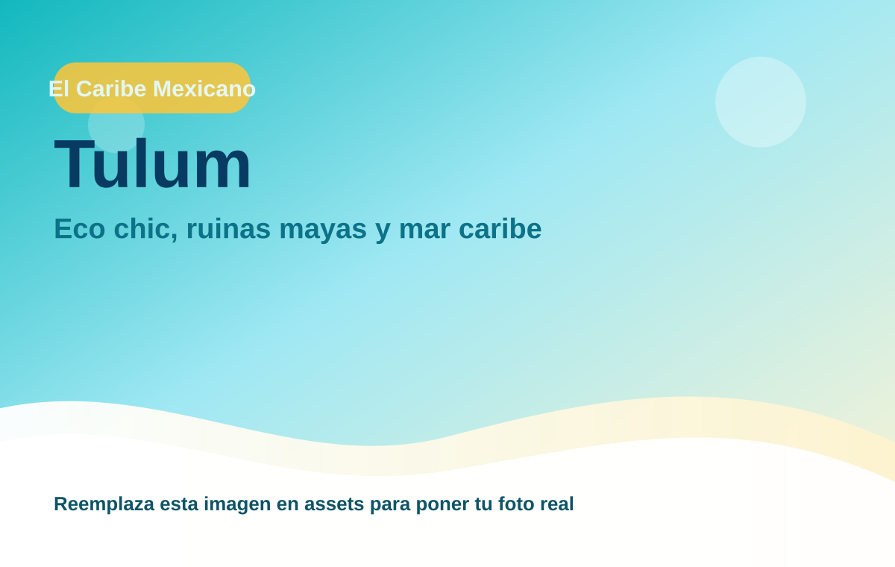
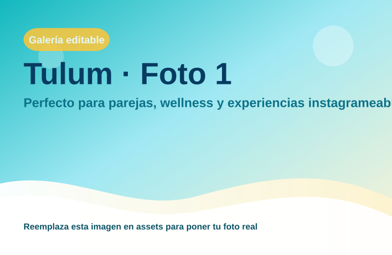
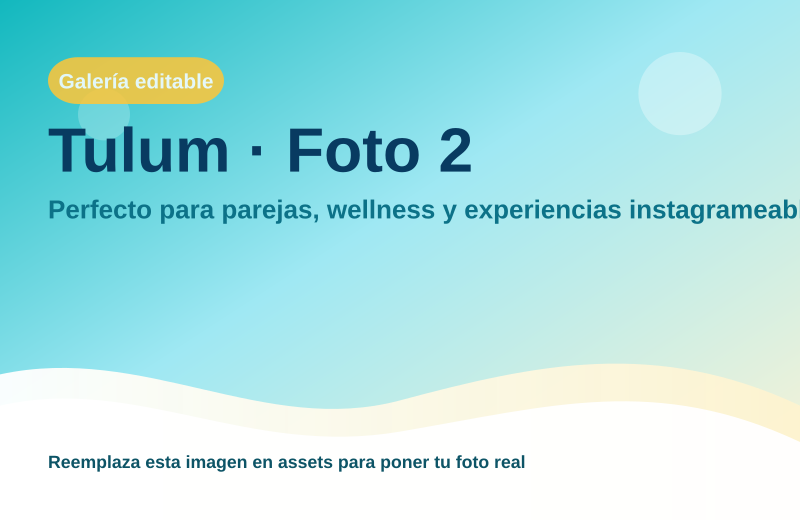
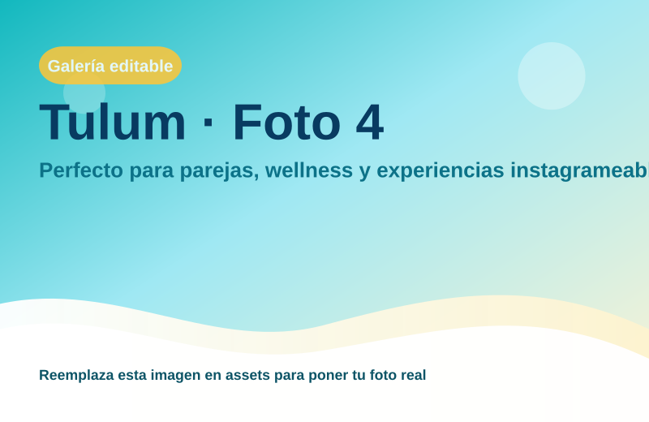

Tulum
Perfecto para parejas, wellness y experiencias instagrameables.

Experiencias boutique y beach vibes
Región: El Caribe Mexicano
Ideal para: Eco chic, ruinas mayas y mar caribe
Usa esta ficha como base rápida. Puedes imprimirla en PDF desde el navegador o compartir el enlace.


